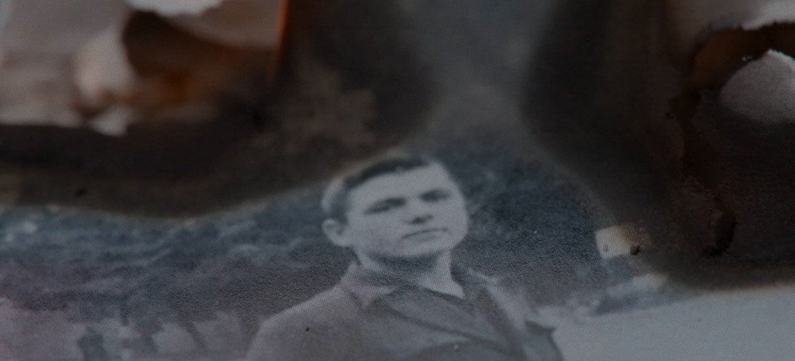

il
ragazzo
conillibro
sotto
ilbraccio
THE STORY OF AN ITALIAN MILITARY INTERNEE
A FILM BY SIMONE MENIN
“The boy with the book under his arm” is the first documentary by Simone Menin, produced by Wow Tapes and distributed by History Channel. It aims to promote the historical memory of the Second World War, through the personal story of an Italian military internee: Nildo Menin, the director's grandfather.
DISCOVER THE DIFFERENT CHAPTERS

00.01
the documentary

00.02
nildo menin

00.03
Italian military
internees
00.04
my life in captivity

00.05
press

00.06